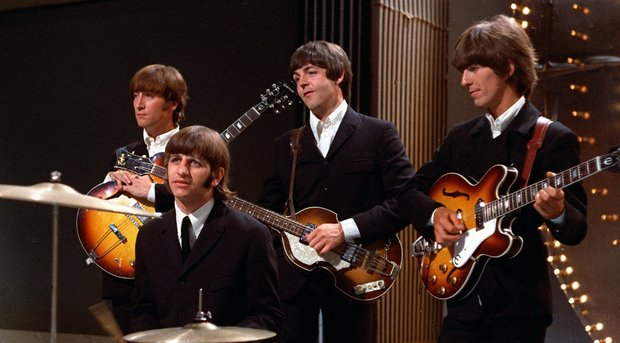

The Beatles were an English rock band, formed in Liverpool in 1960. With members John Lennon, Paul McCartney, George Harrison and Ringo Starr, they became widely regarded as the foremost and most influential act of the rock era.[1] Rooted in skiffle, beat, and 1950s rock and roll, the Beatles later experimented with several musical styles, ranging from pop ballads and Indian music to psychedelia and hard rock, often incorporating classical elements and unconventional recording techniques in innovative ways. In the early 1960s, their enormous popularity first emerged as "Beatlemania", but as the group's music grew in sophistication, led by primary songwriters Lennon and McCartney, they came to be perceived as an embodiment of the ideals shared by the counterculture of the 1960s.
The Beatles built their reputation playing clubs in Liverpool and Hamburg over a three-year period from 1960, with Stuart Sutcliffe initially serving as bass player. The core of Lennon, McCartney and Harrison went through a succession of drummers, including Pete Best, before asking Starr to join them. Manager Brian Epstein moulded them into a professional act, and producer George Martin guided and developed their recordings, greatly expanding their popularity in the United Kingdom after their first hit, "Love Me Do", in late 1962. They acquired the nickname "the Fab Four" as Beatlemania grew in Britain the next year, and by early 1964 became international stars, leading the "British Invasion" of the United States pop market. From 1965 onwards, the Beatles produced increasingly innovative recordings, including the albums Rubber Soul (1965), Revolver (1966), Sgt. Pepper's Lonely Hearts Club Band (1967), The Beatles (commonly known as the White Album, 1968) and Abbey Road (1969). After their break-up in 1970, they each enjoyed successful musical careers of varying lengths. McCartney and Starr, the surviving members, remain musically active. Lennon was shot and killed in December 1980, and Harrison died of lung cancer in November 2001.